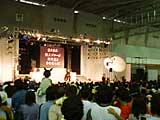
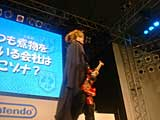
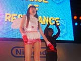
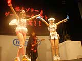
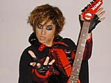

| #8 ゲームボーイソフト「怪人ゾナー」 発売決定スペシャルライブ＆怪人ゾナー直撃インタビュー！ |
|  全国の子供たちをなぞなぞの虜にするべく、怪人ゾナーが任天堂と協力して送り出すゲームボーイ用ソフト、なぞベンチャー「怪人ゾナー」。 スペースワールド2000ではその発売を記念して、怪人ゾナーとおはスタでもおなじみベッキー、カナのユニット「ゾベッカ」による、スペシャルライブが開催されています。イベントステージ周辺は、開演前から元気な子供達の声に包まれ、すごい盛り上がりですね。 |
|  イベントは、おなじみ「ＯＨＡ！」のアイサツで始まりました。そして、子供達の「ゾーナー!!」という大きな声にこたえて怪人ゾナーが登場。いつものようになぞなぞで楽しませてくれたあとは、ベッキーとカナとともに、ゲーム「怪人ゾナー」の説明をしてくれます。 |
|  そして、いよいよスペシャルライブがスタート！ 「ゾナパラ」を熱唱するゾベッカに、会場からは大きな拍手が巻き起こっています。さらに、ゾナパラチャレンジとして急きょステージに上がった男の子と女の子、それにお母さんの3人がゾナパラの歌とダンスに挑戦。これがじつに息ぴったりで、会場からはまたまた大きな拍手の渦！ こうして、スペシャルライブは子供達の笑い声と拍手のなかで終了しました。 |
|  怪人ゾナースペシャルライブは最終日の27日も行われますので、今回見逃した人は、ぜひ足を運んでみてください。そうそう、会場では今回特別に、生写真入り「ゾナパラ」CDの即売会もやってますよ。 |
| それでは、ライブを終えた後の怪人ゾナー様にインタビューしてみましょう。 ──お疲れ様です。大盛況でしたね。 こんなにたくさんの人が来てくれて感謝ゾナ。うれしくていつもより力が入ってしまったゾナ。 ──あのー、ゾナー様は「怪人」ですよね？ なのに子供達に大人気というのは……。 何を言うゾナ。私は全国の子供達になぞなぞを広めるのが目的ゾナ。だから大成功ゾナ。うれしいゾナ。 ──なるほど。今回発売される「怪人ゾナー」もそのために作られたんですか？ もちろんゾナ。我々の秘密結社ナーゾが開発し、ニンテンドウさんに協力してもらって発売するゾナ。なにせゲームボーイは子供達みーんなが持ってるからな。「ゾナパラ」も大好評だし、今度はゲームゾナ。600問ものなぞなぞが入っているので、がんばって答えてほしいゾナ。 ──それでは、最後に怪人ゾナーファンの子供達にメッセージをお願いします。 こんなにたくさんの人に集まってもらえて、とてもうれしいゾナ。「怪人ゾナー」のゲームには、友達と対戦できる「通信ナゾラーバトル」も入っているので、友達どうし、どんどん対戦して遊んでほしいゾナ。 ──どうもありがとうございました。みなさん、「ゾナパラ」CDとゲーム「怪人ゾナー」、よろしくお願いしますね。 |
|
|